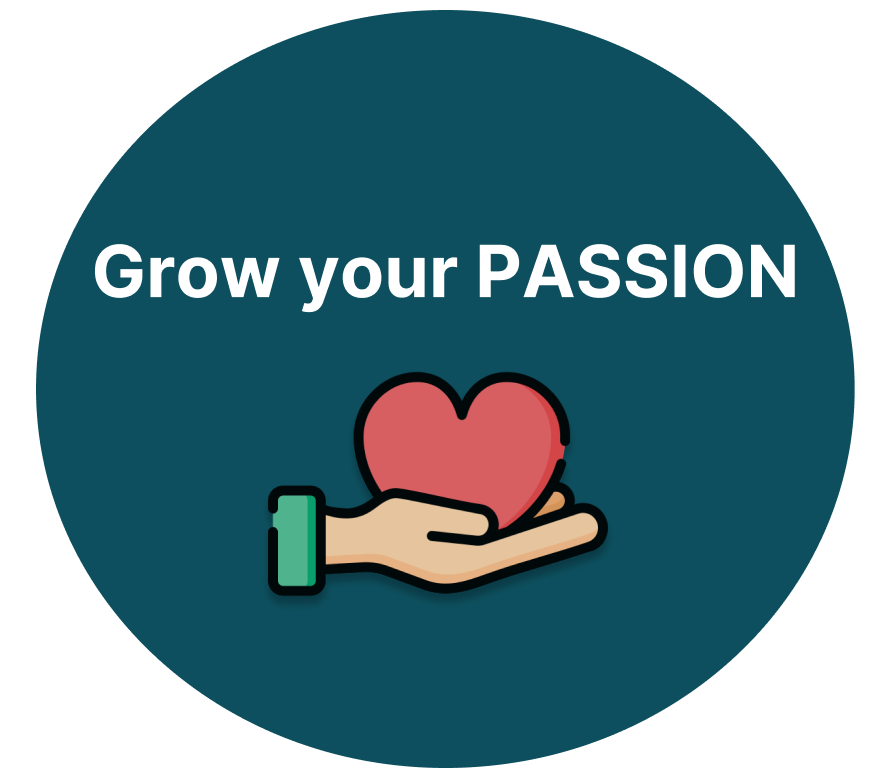
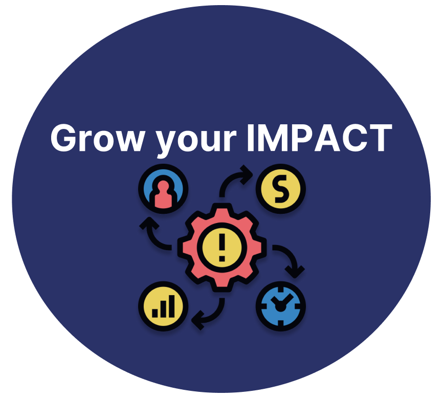

SJIC 2025
Bringing Singapore to the world:
How can we showcase and scale Singapore’s unique culture, enterprise, and talent on a global stage, while preserving local values and fostering meaningful global-local connections through art,
education, and innovation?

About Us
The SJInnovation Challenge 2025 is a dynamic platform that empowers youths to be changemakers of tomorrow. Open to Secondary 3 and 4 IP, Junior College, and Polytechnic students, this
annual challenge encourages young minds to tackle pressing societal issues through the lens of technology and social entrepreneurship.
Participants will have the opportunity to ideate, prototype, and present innovative solutions that create meaningful social impact. Whether it’s through sustainable design, digital
innovation, or community-driven business models, the challenge fosters critical thinking, collaboration, and creativity.
Why SJIC?


Hear from our past participants:

‘I attended SJIC in 2023 with a group of my friends. It was a very enriching and memorable experience!’
- Name
‘I attended SJIC in 2023 with a group of my friends. It was a very enriching and memorable experience!’
- Name
‘I attended SJIC in 2023 with a group of my friends. It was a very enriching and memorable experience!’
- Name